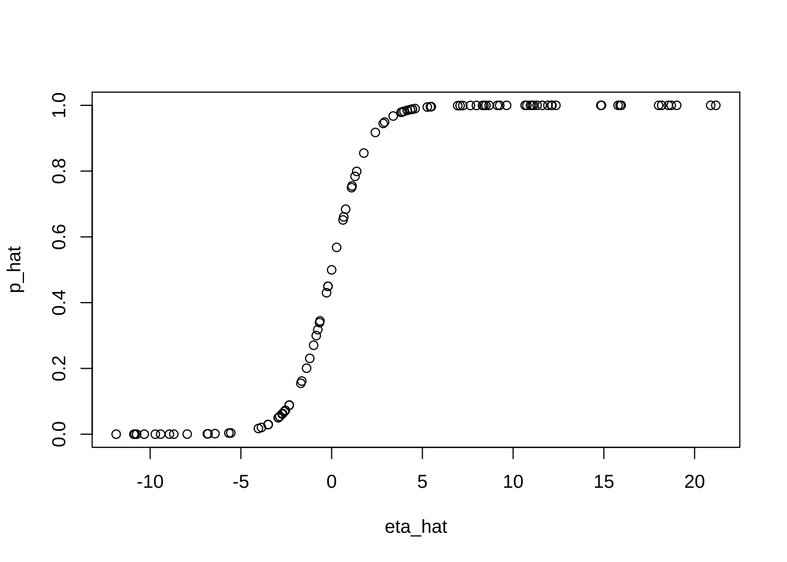
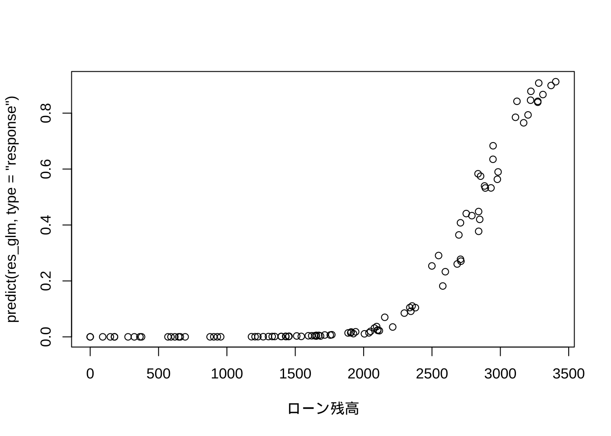

4 ロジット/ブロビット回帰分析
4.1 ロジット回帰分析の基本操作
ロジットモデル: シミュレーションデータ
基本操作を確認するため,
ロジット回帰モデルが想定するデータ生成メカニズムに従って, 人工データを生成する.
その後, このデータを使って, ロジット回帰分析を行う関数であるglm()を呼び出して実行する.
シミュレーションデータの生成
ロジット回帰分析の実行
ロジット回帰分析は, R関数glm()を用いて実行することができる.
glm()は標準パッケージstatsに含まれているため,
あらたなインストール作業は不要である.
glm()を用いた分析の操作手順や出力結果の読み方は,
おおむねlm()を踏襲すれば良い.
glm()に与えるモデル式 (引数formula) のシンタックスは
lm()と同様である. それに加えて, glm()では,
引数familyによってモデルの (分析データを生成していると想定する) 確率分布を指定する.
ロジット回帰/プロビット回帰では, binomialを指定する.
また, lm()と同様に, glm()の出力結果に対して
summary()関数を適用することで, 推定結果が出力される.
# ロジット回帰
res_glm <- glm(y ~ X, family = binomial)
summary(res_glm)
#>
#> Call:
#> glm(formula = y ~ X, family = binomial)
#>
#> Coefficients:
#> Estimate Std. Error z value Pr(>|z|)
#> (Intercept) 2.5815 0.8647 2.985 0.002831 **
#> XX1 1.1494 0.3434 3.347 0.000818 ***
#> XX2 2.7630 0.7509 3.680 0.000233 ***
#> ---
#> Signif. codes: 0 '***' 0.001 '**' 0.01 '*' 0.05 '.' 0.1 ' ' 1
#>
#> (Dispersion parameter for binomial family taken to be 1)
#>
#> Null deviance: 133.750 on 99 degrees of freedom
#> Residual deviance: 34.478 on 97 degrees of freedom
#> AIC: 40.478
#>
#> Number of Fisher Scoring iterations: 8summary()の出力結果の主な相違は,
個別の回帰係数の有意性を見る指標が,
lm()ではt値であったところが glm()ではz値になっている点
(それに伴い, 付随するp値の表記も変化),
および, 全体の適合度の指標について,
lm()のように\(R^2\), 補正\(R^2\)の値が表示されておらず,
その代わりとして, “Null Deviance”, “Residual Deviance”が表示されている点である.
(内挿) 予測
glm()の出力結果を関数predict()に与えることで,
内挿予測 (適合値の算出) を行うことができる.
注意点としては, 引数typeを指定しない場合 (デフォルト設定) には, 未知パラメータの線形結合である
“線形予測子”\(\eta=\beta_0 + \beta_1 x_1 + \cdots + \beta_k x_k\)の予測値が出力される.
関数predict():
- 予測値を返す関数
- 引数typeの選択肢: "link"(デフォルト), "response", "terms"
- "link": 線形予測子のスケールにおける予測
- "response": 反応変数のスケールにおける予測
- "terms": 線形予測子のスケールにおける予測, モデル式の各項の適合値を格納した行列を返すロジット回帰において, 確率の予測を得たい場合には,
type="response"と指定する必要がある.
# 予測 (内挿)
eta_hat <- predict(res_glm) # 対数オッズ
p_hat <- predict(res_glm, type = "response") # 確率
head(data.frame(y, p_hat))
#> y p_hat
#> 1 1 0.9846543
#> 2 0 0.0500027
#> 3 0 0.0507452
#> 4 1 1.0000000
#> 5 1 0.9448650
#> 6 0 0.3178520
plot(eta_hat, p_hat)
以下のように, 線形予測子の予測値に対して, ロジスティク変換 (リンク関数\(g(\cdot)\)の逆関数)
を適用すると, 確率の予測値p_hatと一致することが確認される.
# 確認
# logistic_f <- function(eta){
# exp(eta) / (1 + exp(eta))
# }
# logistic_f(eta_hat) # 線形予測子のロジスティク変換
exp(eta_hat) / (1 + exp(eta_hat)) # 線形予測子のロジスティック変換
#> 1 2 3 4 5 6
#> 9.846543e-01 5.000270e-02 5.074520e-02 1.000000e+00 9.448650e-01 3.178520e-01
#> 7 8 9 10 11 12
#> 7.255619e-02 9.786489e-01 9.999999e-01 5.680028e-01 9.999957e-01 9.948751e-01
#> 13 14 15 16 17 18
#> 6.840476e-01 3.443645e-01 1.734430e-02 1.848314e-05 9.999839e-01 6.129494e-02
#> 19 20 21 22 23 24
#> 4.300994e-01 9.999350e-01 1.000000e+00 2.997055e-01 9.800110e-01 2.155297e-05
#> 25 26 27 28 29 30
#> 9.990392e-01 4.996798e-01 6.281495e-02 1.057488e-03 3.392529e-01 9.674261e-01
#> 31 32 33 34 35 36
#> 9.883911e-01 3.490784e-04 3.277648e-05 9.488525e-01 1.000000e+00 9.992746e-01
#> 37 38 39 40 41 42
#> 9.995223e-01 2.305139e-01 1.000000e+00 8.548202e-01 9.999879e-01 9.991567e-01
#> 43 44 45 46 47 48
#> 2.007423e-01 2.957535e-02 9.999048e-01 9.900165e-01 6.973787e-06 9.998923e-01
#> 49 50 51 52 53 54
#> 3.461442e-03 9.999997e-01 9.958972e-01 9.997546e-01 5.412342e-02 1.615667e-01
#> 55 56 57 58 59 60
#> 8.780960e-02 1.960509e-05 7.839028e-01 1.310930e-04 1.548464e-01 1.613948e-03
#> 61 62 63 64 65 66
#> 7.990981e-01 9.999853e-01 6.514770e-01 9.997732e-01 9.999996e-01 6.913302e-02
#> 67 68 69 70 71 72
#> 6.024214e-05 7.496756e-01 9.817408e-01 9.174800e-01 9.870712e-01 9.999999e-01
#> 73 74 75 76 77 78
#> 9.999765e-01 8.861010e-02 2.704708e-01 1.000000e+00 9.999787e-01 9.996573e-01
#> 79 80 81 82 83 84
#> 9.998298e-01 1.000000e+00 2.045796e-02 2.912945e-02 9.999945e-01 6.607180e-01
#> 85 86 87 88 89 90
#> 9.999999e-01 8.082135e-05 9.999947e-01 9.882999e-01 9.999933e-01 4.497550e-01
#> 91 92 93 94 95 96
#> 9.956770e-01 3.843901e-03 1.100383e-03 1.000000e+00 4.496549e-01 9.997968e-01
#> 97 98 99 100
#> 1.668414e-04 9.999826e-01 7.548861e-01 9.999909e-01
# → p_hatと同じ結果となることを確認4.2 データ分析例
データセット (1): 企業パフォーマンス・データ (仮想)
- firmperf.txt, 8件
- 企業規模 (size): H/L
- 人材投資 (hr_invest): H/L
- SDGs活動 (sdg): H/L
- 対象企業数 (n_tot): 社
- 優良社数 (n_pos): 社データ読み込み
perf_dat1 <- read.csv("firmperf.txt", skip = 2)
# 注) デフォルトはstringsAsFactors = F (文字列を因子型変数に変換せずに読み込む)
# size:sdgは, 関数read.csv()でそのまま読み込むと文字型変数となる.
# 読み込み時に因子型にするには, stringsAsFactors = T
# 執筆現在 (2024年5月10日)のglm()の仕様では, 文字型のままでもOK
colnames(perf_dat1) <- c("size", "hr_invest", "sdg", "n_tot", "n_pos")
attach(perf_dat1)ロジット回帰実行
ロジット回帰の実行の際, 目的変数として
glm()へは異なるデータ形式を与えることもできる.
まず, 目的変数のデータ形式として, “成功回数”,“失敗回数” の2列を持つ行列をglm内でモデル式formulaの左辺に与える例である.
# データ形式-1
# "成功回数"、"失敗回数"の2列
perf_tbl <- cbind(n_pos, n_tot - n_pos)
res_glm1 <- glm(perf_tbl ~ size + hr_invest + sdg, family = binomial)
summary(res_glm1)
#>
#> Call:
#> glm(formula = perf_tbl ~ size + hr_invest + sdg, family = binomial)
#>
#> Coefficients:
#> Estimate Std. Error z value Pr(>|z|)
#> (Intercept) -0.63288 0.25177 -2.514 0.01195 *
#> sizeL -0.07844 0.26926 -0.291 0.77082
#> hr_investL -0.82333 0.27607 -2.982 0.00286 **
#> sdgL -0.61585 0.35132 -1.753 0.07961 .
#> ---
#> Signif. codes: 0 '***' 0.001 '**' 0.01 '*' 0.05 '.' 0.1 ' ' 1
#>
#> (Dispersion parameter for binomial family taken to be 1)
#>
#> Null deviance: 15.2547 on 7 degrees of freedom
#> Residual deviance: 2.3921 on 4 degrees of freedom
#> AIC: 36.198
#>
#> Number of Fisher Scoring iterations: 4線形回帰分析の時と同様,
二つのモデルの間に包含関係 (ネスト, “nested”) がある場合には,
分散分析を行う関数anova()を適用することで,
追加された項がまとめて有意かどうかを評価することができる.
下の例は, 切片しか持たないNullモデル (perf_tbl ~ 1) による
モデルの当てはまりの悪さ, “Residual deviance” (残差逸脱度) を, hr_investとsdgの2変数を
持つモデルの”Residual deviance”と比較し, 後者の残差逸脱度がこれら2変数を加えることでどれだけ
改善したのかをみることことで, 有意性を評価している.
res_glm2 <- glm(perf_tbl ~ hr_invest + sdg, binomial)
summary(res_glm2)
#>
#> Call:
#> glm(formula = perf_tbl ~ hr_invest + sdg, family = binomial)
#>
#> Coefficients:
#> Estimate Std. Error z value Pr(>|z|)
#> (Intercept) -0.6570 0.2380 -2.760 0.00578 **
#> hr_investL -0.8235 0.2760 -2.983 0.00285 **
#> sdgL -0.6100 0.3507 -1.739 0.08200 .
#> ---
#> Signif. codes: 0 '***' 0.001 '**' 0.01 '*' 0.05 '.' 0.1 ' ' 1
#>
#> (Dispersion parameter for binomial family taken to be 1)
#>
#> Null deviance: 15.2547 on 7 degrees of freedom
#> Residual deviance: 2.4775 on 5 degrees of freedom
#> AIC: 34.284
#>
#> Number of Fisher Scoring iterations: 4
res_glm0 <- glm(perf_tbl ~ 1, binomial) # 切片項のみ (null model)
summary(res_glm0)
#>
#> Call:
#> glm(formula = perf_tbl ~ 1, family = binomial)
#>
#> Coefficients:
#> Estimate Std. Error z value Pr(>|z|)
#> (Intercept) -1.3950 0.1205 -11.58 <2e-16 ***
#> ---
#> Signif. codes: 0 '***' 0.001 '**' 0.01 '*' 0.05 '.' 0.1 ' ' 1
#>
#> (Dispersion parameter for binomial family taken to be 1)
#>
#> Null deviance: 15.255 on 7 degrees of freedom
#> Residual deviance: 15.255 on 7 degrees of freedom
#> AIC: 43.061
#>
#> Number of Fisher Scoring iterations: 4
# anova(res_glm2, test = "Chisq") # カイ2乗検定 (test = "LRT"でも可)
anova(res_glm0, res_glm2, test = "Chisq") # 同
#> Analysis of Deviance Table
#>
#> Model 1: perf_tbl ~ 1
#> Model 2: perf_tbl ~ hr_invest + sdg
#> Resid. Df Resid. Dev Df Deviance Pr(>Chi)
#> 1 7 15.2547
#> 2 5 2.4775 2 12.777 0.001681 **
#> ---
#> Signif. codes: 0 '***' 0.001 '**' 0.01 '*' 0.05 '.' 0.1 ' ' 1今回のケースでは, 2変数を加える (自由度2を使う) ことで, 残差逸脱度が15.2547から2.4775へと12.777減少すること, これにより, 帰無仮説 (二つの変数の回帰係数が同時にゼロ) の下で従う自由度2の\(\chi^2\)分布に基づいて計算される\(p\)値が0.001681であること, したがって, 有意水準1%で有意である (帰無仮説が棄却される) ことを示している.
目的変数のデータ形式として, 上とは別の形式として, “成功率”を”試行回数”と共にglmに与える例を次に示す.
# データ形式-2
# "成功率"の指定
prop_perf <- n_pos / n_tot
res_glm1_2 <- glm(prop_perf ~ size + hr_invest + sdg, binomial, weights = n_tot)
summary(res_glm1_2)
#>
#> Call:
#> glm(formula = prop_perf ~ size + hr_invest + sdg, family = binomial,
#> weights = n_tot)
#>
#> Coefficients:
#> Estimate Std. Error z value Pr(>|z|)
#> (Intercept) -0.63288 0.25177 -2.514 0.01195 *
#> sizeL -0.07844 0.26926 -0.291 0.77082
#> hr_investL -0.82333 0.27607 -2.982 0.00286 **
#> sdgL -0.61585 0.35132 -1.753 0.07961 .
#> ---
#> Signif. codes: 0 '***' 0.001 '**' 0.01 '*' 0.05 '.' 0.1 ' ' 1
#>
#> (Dispersion parameter for binomial family taken to be 1)
#>
#> Null deviance: 15.2547 on 7 degrees of freedom
#> Residual deviance: 2.3921 on 4 degrees of freedom
#> AIC: 36.198
#>
#> Number of Fisher Scoring iterations: 4プロビット回帰については,
glm()の引数family=binomial (link = "probit")と指定すれば, あとは
ロジット回帰と同様に実行できる.
# プロビット回帰
res_glm1_p <- glm(perf_tbl ~ size + hr_invest + sdg, family = binomial(link = "probit")) # probit
summary(res_glm1_p)
#>
#> Call:
#> glm(formula = perf_tbl ~ size + hr_invest + sdg, family = binomial(link = "probit"))
#>
#> Coefficients:
#> Estimate Std. Error z value Pr(>|z|)
#> (Intercept) -0.39738 0.15235 -2.608 0.0091 **
#> sizeL -0.04947 0.15331 -0.323 0.7470
#> hr_investL -0.48155 0.16439 -2.929 0.0034 **
#> sdgL -0.33830 0.18901 -1.790 0.0735 .
#> ---
#> Signif. codes: 0 '***' 0.001 '**' 0.01 '*' 0.05 '.' 0.1 ' ' 1
#>
#> (Dispersion parameter for binomial family taken to be 1)
#>
#> Null deviance: 15.2547 on 7 degrees of freedom
#> Residual deviance: 2.4259 on 4 degrees of freedom
#> AIC: 36.232
#>
#> Number of Fisher Scoring iterations: 3(内挿) 予測
関数predict()を用いて予測値を出力するが, 上述のように引数typeを指定しない場合には,
線形予測子 (のスケールでの) 予測を行う. 具体的には, ロジット回帰では対数オッズを,
プロビット回帰では標準正規分布の分位点 (分位点関数は累積分布関数の逆関数) を返す.
一方, type="response"とした場合には, どちらのモデルにおいても, 反応変数のスケール,
すなわち, 確率の予測値を返す.
# 予測 (ロジット回帰)
predict(res_glm1_2) # 対数オッズ (∵ロジット回帰)
#> 1 2 3 4 5 6 7
#> -2.0720496 -1.2487226 -1.4562023 -1.3271595 -1.5346392 -0.6328753 -0.7113122
#> 8
#> -2.1504865
p_hat <- predict(res_glm1_2, type = "response") # 確率
predict(res_glm1_2, type = "terms") # 線形予測子の項ごとの適合値
#> size hr_invest sdg
#> 1 0.03921846 -0.4116635 -0.3079237
#> 2 0.03921846 0.4116635 -0.3079237
#> 3 0.03921846 -0.4116635 0.3079237
#> 4 -0.03921846 0.4116635 -0.3079237
#> 5 -0.03921846 -0.4116635 0.3079237
#> 6 0.03921846 0.4116635 0.3079237
#> 7 -0.03921846 0.4116635 0.3079237
#> 8 -0.03921846 -0.4116635 -0.3079237
#> attr(,"constant")
#> [1] -1.391681# 同 (プロビット回帰)
predict(res_glm1_p) # 標準正規分布の分位点 (∵プロビット回帰)
#> 1 2 3 4 5 6 7
#> -1.2172398 -0.7356881 -0.8789356 -0.7851545 -0.9284021 -0.3973839 -0.4468504
#> 8
#> -1.2667063
p_hat_p <- predict(res_glm1_p, type = "response") # 確率
# 予測値の比較: ロジット vs プロビット
data.frame(perf_dat1, logit = p_hat, probit = p_hat_p)
#> size hr_invest sdg n_tot n_pos logit probit
#> 1 H L L 60 7 0.1118433 0.1117565
#> 2 H H L 8 2 0.2229213 0.2309603
#> 3 H L H 186 36 0.1890489 0.1897181
#> 4 L H L 3 0 0.2096296 0.2161815
#> 5 L L H 86 14 0.1773159 0.1765995
#> 6 H H H 50 16 0.3468589 0.3455422
#> 7 L H H 22 9 0.3293090 0.3274915
#> 8 L L L 18 2 0.1042858 0.1026302
# 参考) 説明変数が因子型(factor)でない場合, 以前はエラー発生
# → 文字型変数は因子型への変換が必要だった
plot(factor(hr_invest), predict(res_glm2, type = "response"))係数の信頼区間
# 信頼区間
confint(res_glm1_2) # 95%信頼区間 (デフォルト)
#> 2.5 % 97.5 %
#> (Intercept) -1.1392044 -0.14805877
#> sizeL -0.6194614 0.43967083
#> hr_investL -1.3592877 -0.27372310
#> sdgL -1.3520115 0.03750972
confint(res_glm1_2, level = 0.90) # 90%信頼区間
#> 5 % 95 %
#> (Intercept) -1.0558140 -0.22506829
#> sizeL -0.5304547 0.35748113
#> hr_investL -1.2736384 -0.36344375
#> sdgL -1.2264225 -0.06339516
detach()(自主課題)
- “firmperf.txt”に対するロジット回帰分析の結果を解釈してみよう.
データセット (2): 個人ローン・デフォルト・データ (仮想)
- default.csv, 100件
- デフォルト (1/0)
- ローン残高 (万円)
- 収入 (万円)
- 職種 (A/B)ロジット回帰
# ロジット回帰
res_glm <- glm(デフォルト ~ ローン残高 + 収入 + 職種, family = binomial)
summary(res_glm)
#>
#> Call:
#> glm(formula = デフォルト ~ ローン残高 + 収入 + 職種,
#> family = binomial)
#>
#> Coefficients:
#> Estimate Std. Error z value Pr(>|z|)
#> (Intercept) -1.336e+01 3.505e+00 -3.811 0.000138 ***
#> ローン残高 4.708e-03 1.224e-03 3.846 0.000120 ***
#> 収入 -9.227e-04 2.345e-03 -0.394 0.693925
#> 職種B 9.713e-01 1.445e+00 0.672 0.501434
#> ---
#> Signif. codes: 0 '***' 0.001 '**' 0.01 '*' 0.05 '.' 0.1 ' ' 1
#>
#> (Dispersion parameter for binomial family taken to be 1)
#>
#> Null deviance: 102.791 on 99 degrees of freedom
#> Residual deviance: 46.971 on 96 degrees of freedom
#> AIC: 54.971
#>
#> Number of Fisher Scoring iterations: 8
plot(ローン残高, predict(res_glm, type = "response"))
プロビット回帰
# プロビット回帰
res_glm_p <- glm(デフォルト ~ ローン残高 + 収入 + 職種, family = binomial(link = "probit"))
summary(res_glm_p)
#>
#> Call:
#> glm(formula = デフォルト ~ ローン残高 + 収入 + 職種,
#> family = binomial(link = "probit"))
#>
#> Coefficients:
#> Estimate Std. Error z value Pr(>|z|)
#> (Intercept) -7.0233825 1.6903093 -4.155 3.25e-05 ***
#> ローン残高 0.0024920 0.0005893 4.229 2.35e-05 ***
#> 収入 -0.0006478 0.0013082 -0.495 0.620
#> 職種B 0.6549554 0.8035424 0.815 0.415
#> ---
#> Signif. codes: 0 '***' 0.001 '**' 0.01 '*' 0.05 '.' 0.1 ' ' 1
#>
#> (Dispersion parameter for binomial family taken to be 1)
#>
#> Null deviance: 102.79 on 99 degrees of freedom
#> Residual deviance: 47.81 on 96 degrees of freedom
#> AIC: 55.81
#>
#> Number of Fisher Scoring iterations: 8
## 結果の比較: glm vs lm
# res_glm_normal <- glm(デフォルト ~ ローン残高 + 収入 + 職種, family = gaussian)
# summary(res_glm_normal)
# res_lm <- lm(デフォルト ~ ローン残高 + 収入 + 職種)
# anova(res_lm)便利なツール: パッケージepiDisplay
# (参考) 便利なツール
library(epiDisplay)
logistic.display(res_glm, simplified = TRUE)
#>
#> OR lower95ci upper95ci Pr(>|Z|)
#> ローン残高 1.0047194 1.0023118 1.007133 0.0001199072
#> 収入 0.9990777 0.9944971 1.003679 0.6939246907
#> 職種B 2.6413382 0.1555813 44.842586 0.5014338592(自主課題)
- “default.csv”に対するロジット回帰分析の結果を解釈してみよう.
4.3 疑似R2の計算
線形回帰の場合と異なり, ロジット回帰では, \(R^2\)は計算されない. しかし, ロジット回帰 (より一般に, 一般化線形モデル) においては, 疑似的に\(R^2\)を計算する方法が 複数提案されている.
# ロジット回帰
res_glm <- glm(デフォルト ~ ローン残高 + 収入 + 職種,
family = binomial, data = default)
# summary(res_glm)以下では, 3つのパッケージDescTools, pscl, performanceを使用した例を紹介する.
パッケージDescToolsの利用
DescTools::PseudoR2()
- usage: PseudoR2(x, which = NULL)
- which: 計算したい疑似R2.
選択肢: "McFadden"(デフォルト), "McFaddenAdj", "CoxSnell", "Nagelkerke", "AldrichNelson", "VeallZimmermann", "Efron", "McKelveyZavoina", "Tjur", "all".# 疑似R2の計算
library(DescTools)
PseudoR2(res_glm) # McFadden (デフォルト)
#> McFadden
#> 0.5430468
PseudoR2(res_glm, which = "CoxSnell") # Cox-Snell
#> CoxSnell
#> 0.4277647
PseudoR2(res_glm, which = "Nagelkerke") # Nagelkerke
#> Nagelkerke
#> 0.6660436
PseudoR2(res_glm, which = "all")
#> McFadden McFaddenAdj CoxSnell Nagelkerke AldrichNelson
#> 0.5430468 0.4652192 0.4277647 0.6660436 0.3582359
#> VeallZimmermann Efron McKelveyZavoina Tjur AIC
#> 0.7067438 0.5736644 0.8515845 0.5589555 54.9708332
#> BIC logLik logLik0 G2
#> 65.3915139 -23.4854166 -51.3956671 55.8205010疑似\(R^2\)は, 方法により相当異なることが確認される.
パッケージpsclの利用
pscl::pR2()
- 以下を出力:
- llh: The log-likelihood from the fitted model
- llhNull: The log-likelihood from the intercept-only restricted model
- G2: Minus two times the difference in the log-likelihoods
- McFadden: McFadden's pseudo r-squared
- r2ML: Maximum likelihood pseudo r-squared
- r2CU: Cragg and Uhler's pseudo r-squared